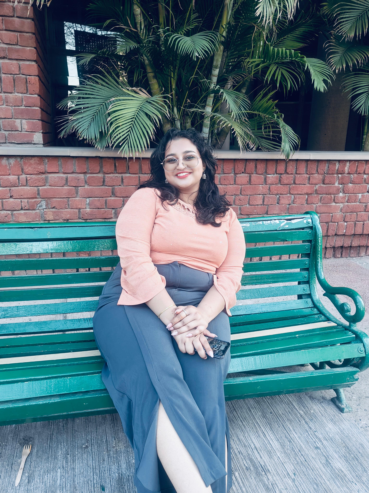

Hello, I'm Prapti, a Computer Science Engineering student with a growing passion for building things that actually mean something.
I started my journey with core programming (C, C++, DSA), and somewhere along the way, I realized I didn’t just want to code, I wanted to create experiences. That curiosity pushed me into exploring AI, cybersecurity, and design, and now I’m actively building projects that blend logic with creativity.
Currently, I’m diving into cybersecurity, working with tools like Kali Linux and exploring real-world vulnerabilities through concepts like the OWASP Top 10. At the same time, I’m also developing projects like a Smart Door Lock with Face Recognition, and Decentralised Academic Skill Passport, combining hardware, blockchain, Python, and computer vision.
But that’s not all, I also have a creative side. I run a design page where I create visual content and social media posts, because I genuinely enjoy turning ideas into something aesthetically pleasing.
Outside of tech, I love travelling and exploring new places, capturing moments through photography, and expressing creativity through drawing and painting. For me, it’s all about experiencing different perspectives and turning them into something meaningful, whether that’s a memory, a design, or an idea.
I love learning by doing, whether it’s building a chess engine, experimenting with blockchain-based projects, or figuring things out at 2 AM because something just won’t work (classic developer moment).
To grow into a developer who not only writes efficient code but also creates solutions that are impactful, secure, and user-friendly.
← Back